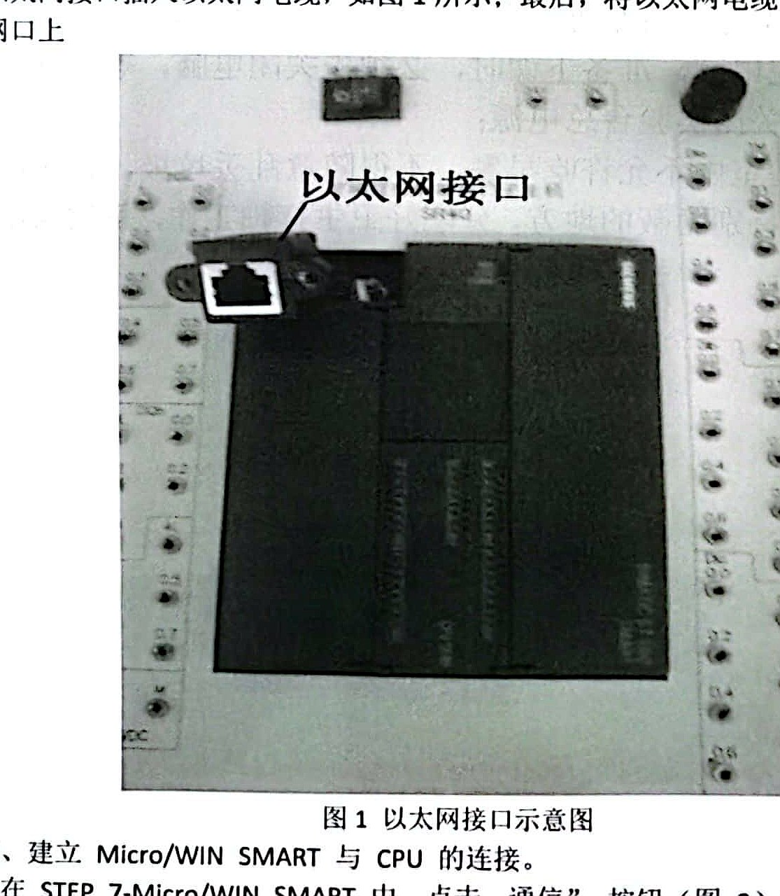
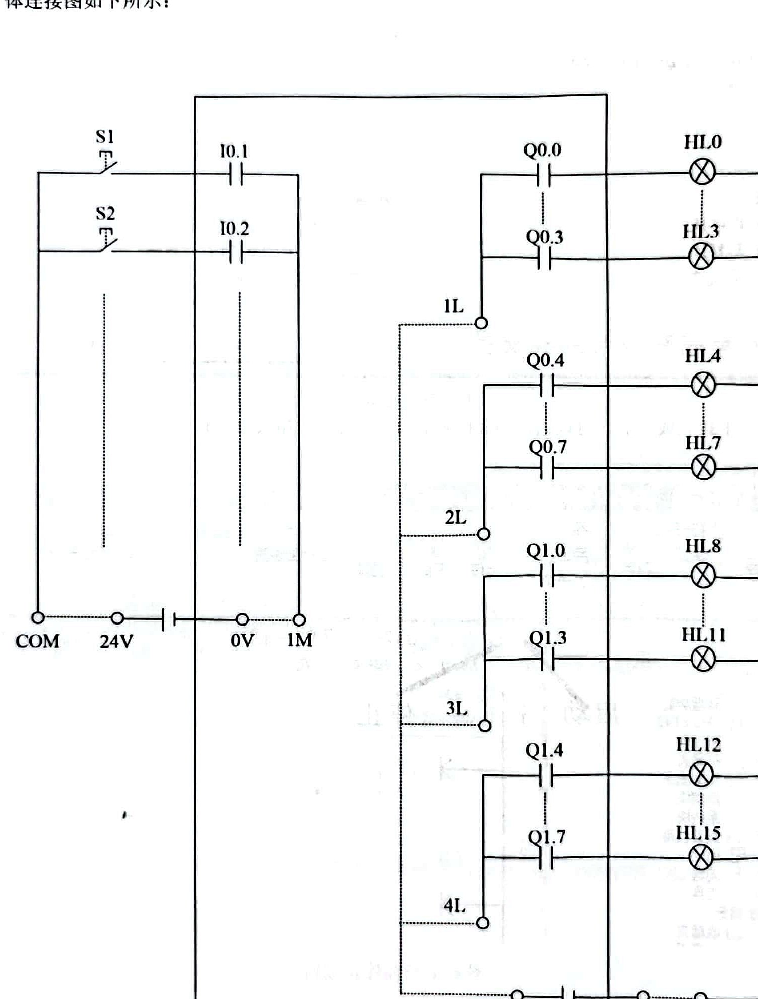
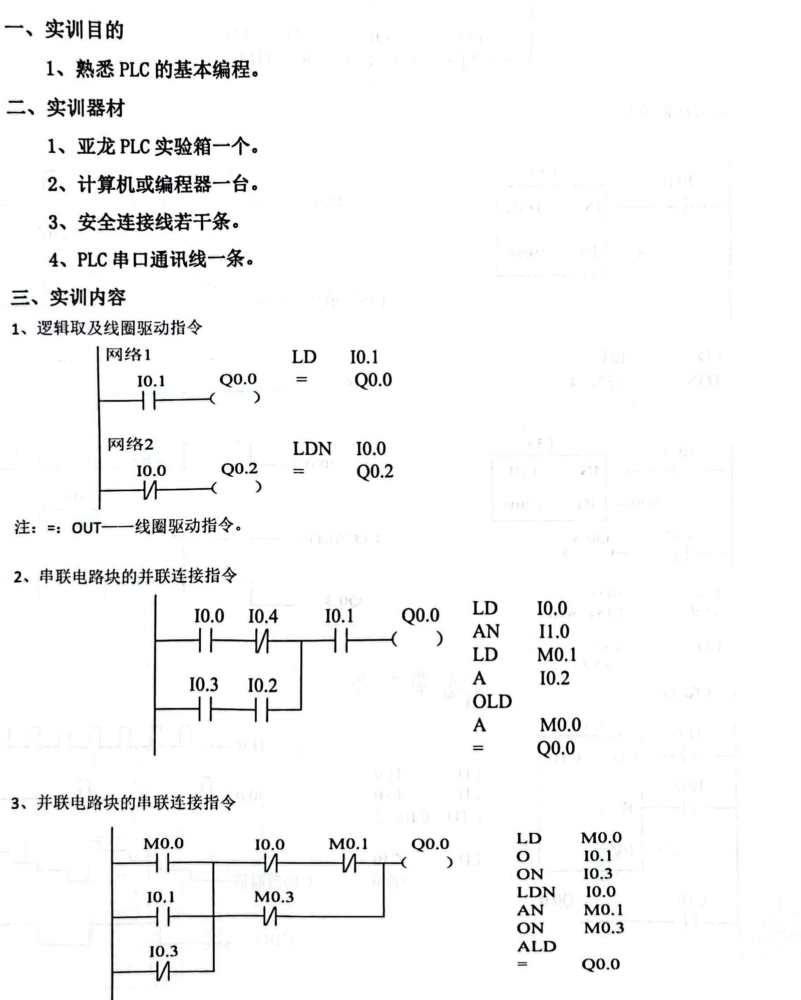

问题背景Problem Context
PLC 是工业设备控制中常见的核心控制单元。一个自动化系统不仅需要硬件接线，还需要把现场输入信号、输出执行元件和设备运行顺序转化为可靠的程序逻辑。对于电机启动、报警、延时动作和互锁控制等场景，工程人员需要理解电气原理图、I/O 地址、梯形图指令和调试流程之间的关系。 PLCs are common control units in industrial equipment. An automation system needs more than wiring; it must translate field inputs, output actuators and operating sequences into reliable control logic. Motor starting, alarms, delayed actions and interlocks all require a clear relationship between electrical diagrams, I/O addresses, ladder instructions and commissioning workflow.
项目类型Project Type
- 大学课程实验项目，面向 PLC 基础控制逻辑、实验箱 I/O 回路和电机启动顺序控制。University laboratory project focused on PLC control logic, training-box I/O circuits and motor starting sequence control.
- 项目内容适合展示自动化、电气控制、设备技术支持和测试工程入门岗位中的基础分析能力。Relevant to entry-level automation, electrical control, equipment support and testing roles.
- 项目材料覆盖实验平台、输入输出回路、梯形图指令和电机顺序控制案例。The project material covers the laboratory platform, I/O circuits, ladder instructions and motor sequence-control examples.
技术流程Technical Workflow
| 阶段一Stage 1 | 实验平台与通信配置：使用 PC、S7-200 SMART CPU、PLC 实验箱和 STEP7-MicroWIN SMART，完成 CPU 型号选择、网络接口识别、IP 地址设置和程序下载流程。该阶段建立编程设备与控制器之间的连接。 Platform and communication setup: PC, S7-200 SMART CPU, PLC training unit and STEP7-MicroWIN SMART were used for CPU selection, network-interface identification, IP setup and program download workflow. |
|---|---|
| 阶段二Stage 2 | I/O 映射与实验箱回路分析：识别输入端 I0.x、输出端 Q0.x 与按钮、指示灯、继电器和端子之间的对应关系，为梯形图编写和故障排查建立地址基础。 I/O mapping and circuit analysis: I0.x inputs and Q0.x outputs were mapped to push buttons, lamps, relays and terminal connections to support ladder programming and troubleshooting. |
| 阶段三Stage 3 | 基础梯形图与指令练习：分析触点、线圈、串并联逻辑、置位、复位、TON、TOF 和 CTU 指令，并对比梯形图与语句表表达方式。 Basic ladder logic and instruction practice: contacts, coils, series/parallel logic, set/reset, TON, TOF and CTU instructions were analysed with ladder-diagram and statement-list representations. |
| 阶段四Stage 4 | 电机星形-三角形启动控制分析：围绕启动按钮 SB2、停止按钮 SB1、热继电器 FR 和接触器 KM1/KM3/KM4，拆解星形启动、延时切换、三角形运行和停止保护流程。 Star-delta motor starting analysis: start button SB2, stop button SB1, thermal relay FR and contactors KM1/KM3/KM4 were used to interpret star starting, timed transition, delta running and stop protection. |
技术工作Technical Contribution
- 梳理 PLC 实验平台的通信建立流程，包括 CPU 型号选择、网络接口识别、IP 地址设置和程序下载步骤。Structured the PLC communication workflow, including CPU selection, network-interface identification, IP setup and program download steps.
- 分析实验箱输入输出回路，将按钮、指示灯、继电器和 PLC I/O 地址之间的关系整理为控制逻辑基础。Analysed training-box I/O circuits and mapped buttons, lamps, relays and PLC addresses into a control-logic foundation.
- 对比梯形图与语句表表达方式，整理触点、线圈、置位、复位、串并联电路块等基础指令的功能。Compared ladder diagrams with statement-list expressions for contacts, coils, set/reset and series/parallel logic blocks.
- 分析 TON、TOF 和 CTU 指令在延时、脉冲和计数逻辑中的作用，并结合波形示意理解状态变化。Analysed TON, TOF and CTU instructions for delay, pulse and counting logic, using waveform diagrams to interpret state changes.
工具与方法Tools and Methods
- 工具：PLC 实验箱、S7-200 SMART CPU、STEP7-MicroWIN SMART、以太网通信、I/O 接线图。Tools: PLC training unit, S7-200 SMART CPU, STEP7-MicroWIN SMART, Ethernet communication and I/O wiring diagrams.
- 方法：I/O 地址映射、梯形图编程、语句表对应分析、置位/复位逻辑、TON/TOF 定时器、CTU 计数器和顺序控制。Methods: I/O address mapping, ladder programming, statement-list comparison, set/reset logic, TON/TOF timers, CTU counters and sequence control.
- 应用案例：三相异步电动机星形-三角形启动控制，包括启动、延时切换、运行和停止保护。Application case: three-phase induction motor star-delta starting, covering start, timed transition, running and stop protection.
选定输出Selected Outputs
- PC 与 PLC 实验箱通信配置流程，包括通信按钮、CPU 搜索、IP 地址设置和程序下载完成界面。PC-PLC communication workflow, including communication menu, CPU discovery, IP setup and program-download confirmation.
- PLC 实验箱输入输出回路图，展示 I0.1、I0.2、Q0.0、Q0.3 等地址与外部输入输出元件的对应关系。PLC training-box I/O circuit diagram showing the relationship between I0.1, I0.2, Q0.0, Q0.3 and external input/output elements.
- 基础梯形图练习页面，覆盖常开/常闭触点、线圈输出、串联、并联、置位和复位逻辑。Basic ladder-logic examples covering normally open/closed contacts, coil outputs, series, parallel, set and reset logic.
- 定时器与计数器指令示例，包括 TON、TOF、CTU、T33、T35、T37、T38 和 C10 的逻辑使用。Timer and counter instruction examples, including TON, TOF, CTU, T33, T35, T37, T38 and C10 usage.
- 星形-三角形启动案例：启动后星形启动，延时 5 秒后切换，再延时 2 秒进入三角形运行；停止按钮或热继电器动作后相关接触器失电。Star-delta starting case: star starting after start command, transition after a 5-second delay, delta running after a further 2-second delay, and contactor de-energisation after stop or thermal relay action.
项目图示Project Visuals
PLC 实验平台、I/O 回路与控制逻辑 PLC Laboratory Platform, I/O Circuit and Control Logic
以下图示展示了项目中的实验平台、输入输出回路、基础梯形图指令和星形-三角形电机启动控制逻辑。它们对应通信配置、I/O 映射、程序逻辑和电机顺序控制四个关键环节。 The visuals below show the laboratory platform, input-output circuit, basic ladder instructions and star-delta motor starting logic used in the project. They correspond to communication setup, I/O mapping, program logic and motor sequence control.



工程相关性Engineering Relevance
该项目与自动化、电气控制、设备维护和工业技术支持岗位中的基础工作场景相关。项目覆盖 PLC 通信配置、I/O 映射、梯形图逻辑、定时计数控制和电机启动顺序分析，可迁移到设备控制逻辑阅读、基础程序维护、控制柜调试配合和自动化系统故障排查等入门级工程任务中。 The project is relevant to entry-level automation, electrical control, equipment maintenance and industrial technical-support work. It covers PLC communication, I/O mapping, ladder logic, timer/counter control and motor starting sequence analysis, which translate into reading control logic, supporting basic program maintenance, assisting cabinet commissioning and troubleshooting automation systems.
可折叠 FAQCollapsible FAQ
这个项目主要解决什么问题？What was the purpose of this project?
项目关注 PLC 控制逻辑如何从电气元件和控制需求转化为程序表达。内容从 PC 与 PLC 通信配置开始，延伸到输入输出地址映射、基础梯形图指令、定时器、计数器和电机星形-三角形启动逻辑。整体内容围绕控制系统基础建模、逻辑分析和工程表达展开。The project focused on how PLC control logic translates electrical elements and control requirements into programmable expressions. It starts with PC-PLC communication, then moves through I/O mapping, ladder instructions, timers, counters and star-delta motor starting logic.
I/O 映射为什么重要？Why is I/O mapping important?
I/O 映射把现场输入输出元件转化为 PLC 程序中的地址。启动按钮、停止按钮、热继电器和接触器需要分别对应 PLC 输入或输出地址。没有清晰的 I/O 映射，梯形图逻辑无法可靠对应实际设备动作。I/O mapping converts physical input and output devices into PLC program addresses. Start buttons, stop buttons, thermal relays and contactors must be represented by PLC input or output addresses; otherwise ladder logic cannot reliably correspond to equipment behaviour.
星形-三角形启动逻辑如何体现顺序控制？How does the star-delta case show sequence control?
按下启动按钮后，KM1 和 KM4 得电，电机进入星形启动；延时 5 秒后 KM4 失电；再延时 2 秒后 KM3 得电，电机进入三角形运行。停止按钮或热继电器动作时，KM1、KM3 和 KM4 失电，电机停止运行。这个过程体现了基于时间和状态的顺序控制。After the start button is pressed, KM1 and KM4 energise for star starting. After a 5-second delay KM4 releases, then after a further 2-second delay KM3 energises for delta running. Stop or thermal relay action de-energises the contactors and stops the motor.
定时器在控制逻辑中承担什么作用？What role do timers play in the logic?
TON、TOF、T37、T38 等定时器用于把输入状态变化转换为延时后的输出动作，例如延时接通信号、瞬时接通延时断开信号和脉冲信号。对于星三角启动，延时逻辑决定从星形启动切换到三角形运行的时间顺序。Timers such as TON, TOF, T37 and T38 convert input-state changes into delayed output actions, including delayed energisation, delayed release and pulse generation. In star-delta starting, timers define the transition from star starting to delta running.
进入真实工业场景还需要补充什么？What would be added in an industrial setting?
更完整的工程应用需要补充实际设备参数、接线验证、在线监控截图、故障测试、联锁验证和安全规范审查。对于电机控制系统，还需要结合电机额定参数、控制柜图纸、保护整定和现场验收流程，形成可执行的调试和交付记录。A more complete engineering application would add real equipment parameters, wiring checks, online monitoring captures, fault tests, interlock validation and safety review. Motor control work would also need rated motor data, cabinet drawings, protection settings and commissioning records.